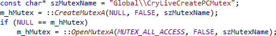

System Symbols in Italic
Display system symbols in italic to differentiate them from references that have been overridden. System symbols include those defined in imported objects, in the System namespace, and via the include directories of project settings.

Enable italics in the options dialog of Visual Assist.
Learn more.